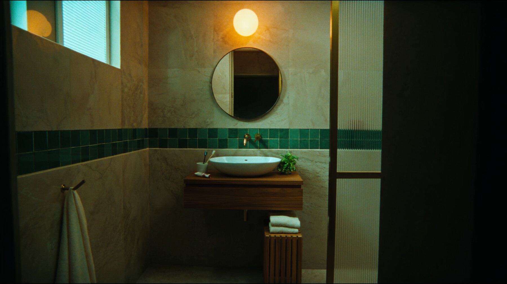

L3 · INTERIOR, VANITY AND MIRROR
Master angle. Camera just inside the door at chest height, square to the vanity wall. One warm globe sconce above the mirror against flat cyan daylight from the frosted window top-left. Round brass mirror, opal globe sconce, floating walnut vanity with vessel basin and brass tap, glossy teal zellige band, reeded partition right.